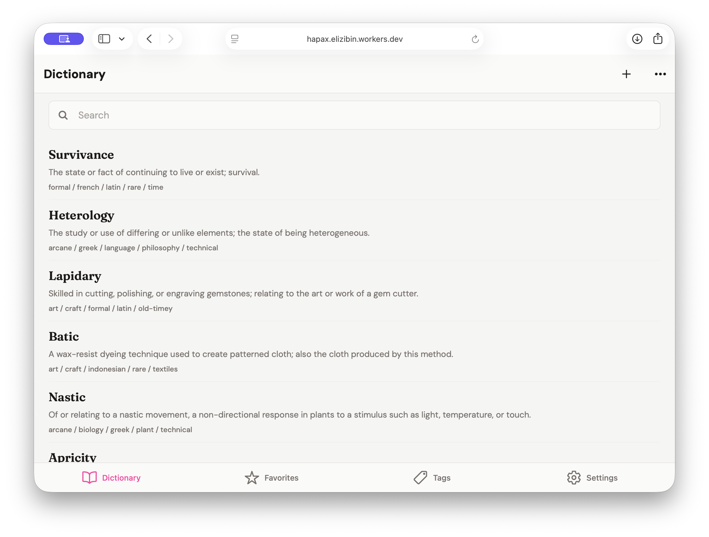
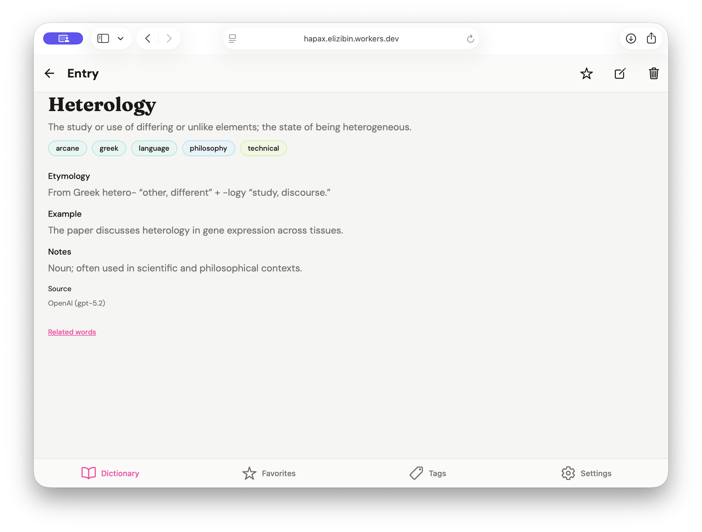
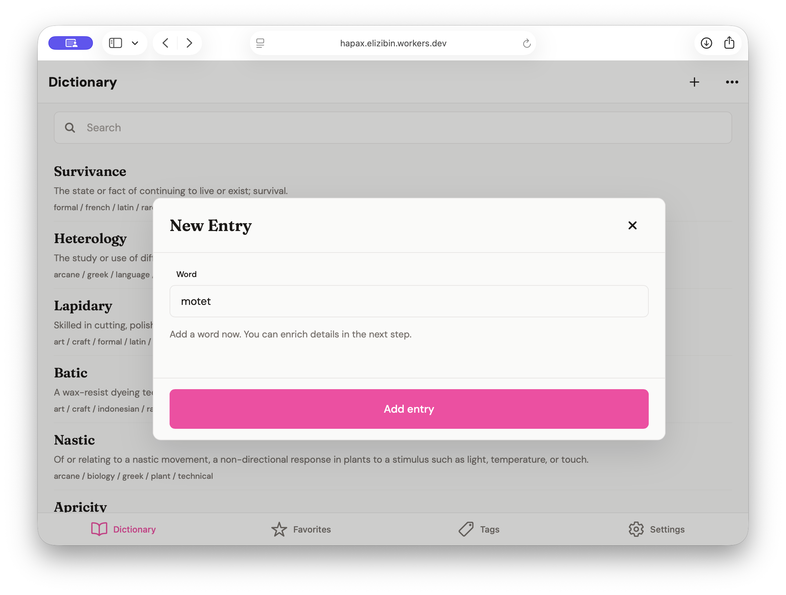
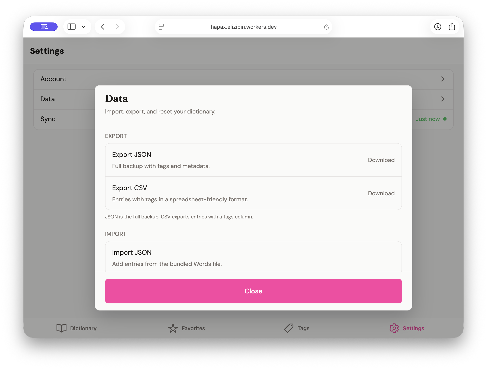

Adding Web to Hapax
19/03/2026
CO-WRITTEN BY ELI AND CODEX
I added web to Hapax, and it was pretty easy.

I wanted Hapax in a browser so I could use it on my laptop sometimes. If you want the earlier iOS-first walkthrough first, it's Building Hapax: An Offline-First Dictionary App.
It ended up being pretty easy. A few .web.ts files, a few browser-specific fixes, and the app mostly just carried over. Expo and React Native Web have really come a long way.

The only real changes were the normal web ones: sheets, routing, auth callbacks, and getting SQLite behaving properly in the browser.

Cloudflare routing was the fiddliest part. After that it was done.

Anyway, it works, and I'm happy it's there. It's pretty incredible to build from a single codebase and have it work on multiple platforms like this, especially when it's driven by an LLM too.